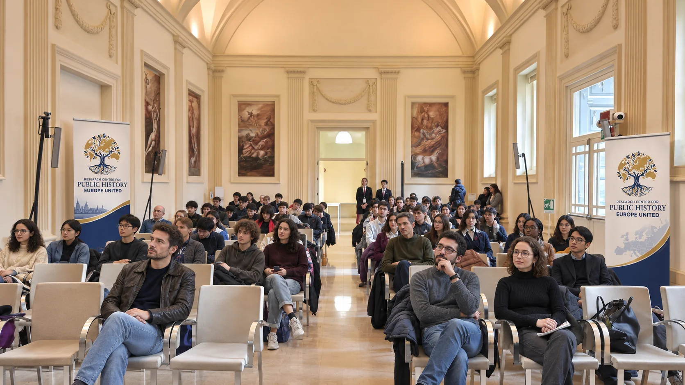
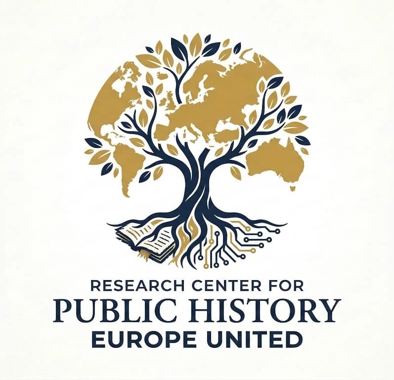
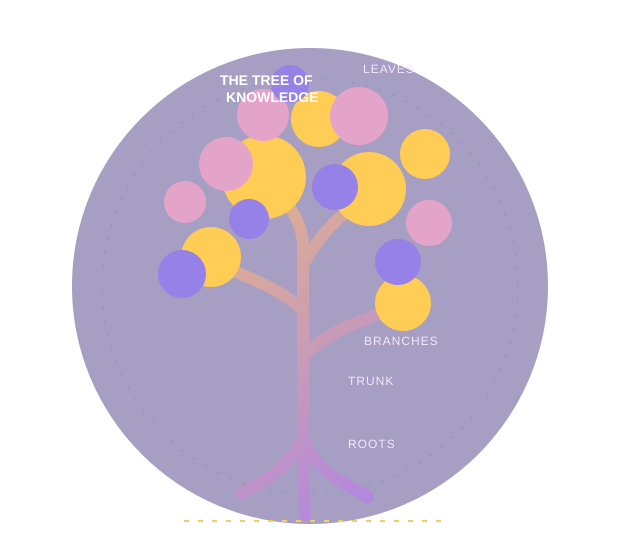

Public History
Ricerche, mostre, percorsi di memoria e progetti che coinvolgono direttamente le comunità.
Scopri di piùPortiamo la ricerca storica fuori dagli archivi e dentro le comunità. Per ascoltare, custodire e raccontare le molte storie che compongono l’Europa.

CENTRO STUDI DI STORIA E MEMORIA EUROPEA · EUROPE UNITEDEurope United è un Centro Studi di Storia e Memoria Europea: un luogo di incontro tra ricerca, territori, fonti e persone.
Crediamo in una storia rigorosa ma accessibile, condivisa con chi quei luoghi li abita e quelle memorie le custodisce.
La nostra visione ↗Conoscenza scientifica accessibile e dialogo tra competenze.
Storie quotidiane, voci poco ascoltate, patrimoni locali.
Archivi e narrazioni che rafforzano partecipazione e democrazia.

Un simbolo che unisce patrimonio, conoscenza e connessioni contemporanee: la nostra ricerca parte dalle persone e ritorna alle comunità.
Dalla ricerca sul campo al racconto digitale: metodi diversi, un unico obiettivo pubblico.
Ricerche, mostre, percorsi di memoria e progetti che coinvolgono direttamente le comunità.
Scopri di piùInterviste, ascolto delle testimonianze e documentazione delle storie personali e collettive.
Scopri di piùMappe narrative, archivi partecipativi, podcast ed esperienze digitali accessibili.
Scopri di piùIniziative di ricerca e cooperazione europea, con ruoli e stati chiaramente indicati.
I luoghi diventano un atlante collettivo di memorie, testimonianze e paesaggi culturali.
Scopri il progettoUn’esperienza investigativa per confrontare fonti e ricostruire una storia familiare europea.
Scopri il progettoScuole e comunità raccontano le memorie sociali dei territori del motorsport.
Scopri il progettoStorie di migrazione, memoria condivisa del Mediterraneo e apprendimento attraverso esperienze di gioco e narrazione.
Scopri il progettoUn modello europeo per lo sviluppo delle competenze sull’intelligenza artificiale nella didattica VET.
Scopri il progettoRicerca, divulgazione e confronto. Una selezione di immagini condivise per raccontare gli spazi della partecipazione.


Un metodo in quattro momenti: dalle fonti conservate con cura, alla loro interpretazione, al racconto pubblico, fino all’impatto sulle comunità.
Scopri il Tree of Knowledge
Europe United dialoga con realtà attive nell’educazione, nell’innovazione sociale e nella sostenibilità.
Organizzazioni indipendenti che condividono progettualità, visioni e opportunità di cooperazione nel C7EU Network. I marchi ufficiali delle organizzazioni saranno inseriti dopo conferma degli asset grafici.
Hai un archivio da valorizzare, una storia da raccogliere o un progetto europeo da costruire?